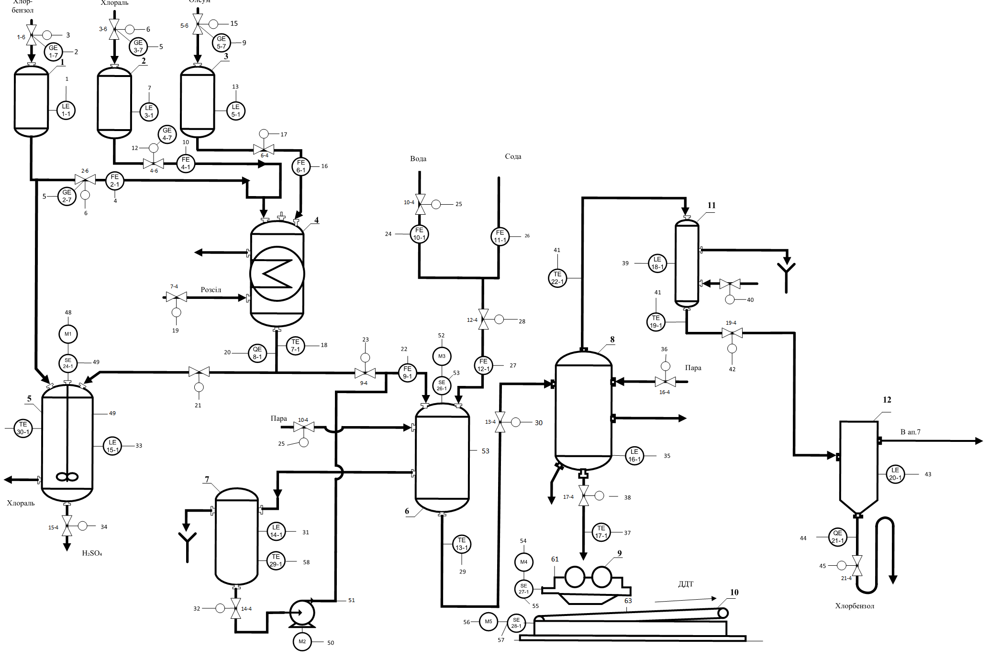

Про ДДТ:

Дихлордифенілтрихлорметилмета́н (далі - ДДТ) — класичний інсектицид, що за нормальних умов є білою кристалічною речовиною без смаку і майже без запаху, включений у додаток про обмеження використання, тобто може створюватися і бути використаним тільки для боротьби з переносниками інфекцій. Свого часу ДДТ широко використовувалося у боротьбі із комарами та сараною, шкідниками бавовни, соєвих бобів, арахісу.
ДДТ раніше був одним з найважливіших контактних отрутохімікатів для боротьби з більшістю листогризучих комах: жуками, гусеницями, личинками, мухами практично на всіх культурах. З великими обмеженнями застосовується для боротьби з комахами і кліщами в ветеринарії. Проти гусениць ефективніше, ніж гексахлоран, але проти саранчі, дротяних хробаків і деяких інших шкідників значно менш ефективний. Нерідко ДДТ застосовували в суміші з гексахлораном: гексахлоран діє швидше на багатьох шкідників, ніж ДДТ, але останній зберігається на листках більш тривалий час.
ДДТ був розроблений в декількох формах, включаючи розчини в ксилолі або нафтових дистилятах, концентрати, що змочуються водою ,порошки, гранули, аерозолі, димові свічки і заряди для випарників і лосьйонів.
З 1950 по 1980 рік ДДТ широко використовувався в сільському господарстві - понад 40 000 тон щорічно у всьому світі - і, за оцінками, з 1940-х років в світі було вироблено в цілому 1,8 мільйона тон .У США його виробляли близько 15 компаній. Пік виробництва припав на 1963 рік - 82 000 тон на рік. До заборони 1972 року в США було загалом вироблено більше 600 000 тон. Пік використання припав на 1959 рік і склав близько 36 000 тон. Китай припинив виробництво в 2007 році. У 2009 році було вироблено 3314 тон для боротьби з малярією і вісцеральним лейшманіозом.
Використання ДДТ заборонено в Україні в 1988 р., але ДДТ все ще використовується в деяких інших країнах для боротьби з малярією.
Згідно конвенції 2001 року прийнятої у Стокгольмі, використання ДДТ все ще допускається у обмежених кількостях в країнах, що не здатні повністю перейти на альтернативні інсектициди. Також Всесвітня організація охорони здоров'я все ще рекомендує ДДТ для стримування малярії. Оскільки
речовина ще застосовується ,а більшість підприємств припинили діяльність, або ж мають застарілу матеріальну базу - постає питання їх автоматизації ,за потреби в іншій державі, де це дозволено законом. Наразі у сільському господарстві ДДТ застосовують Індія ,Північна Корея та деякі країни африканського континенту. У комах ДДТ порушує метаболізм в нейронах, змушуючи їх спонтанно спрацьовувати, що призводить до спазмів і, в кінцевому підсумку, до смерті. Комахи з певними мутаціями в гені натрієвого каналу стійкі до ДДТ і аналогічним інсектицидів. Стійкість до ДДТ також забезпечується за рахунок активації генів у деяких видів комах ,тоді великі кількості деяких ферментів прискорюють перетворення токсину в неактивні метаболіти. З плином часу пестицид накопичується в організмі - вивід його назовні за допомогою очисних систем неможливий. Серед основних аналогів цього інсектициду особливо виділяють такі: Альдрин - речовина з досить високими токсичними показниками, схильне до скупчення в організмі і не піддається розкладанню. Має підвищену небезпеку для людини, що і зумовило його заборону в ряді країн. Аналогами може бути: Дильдрин - хімікат, основу якого складає альдрин, але в меншій концентрації. Для живих істот менш небезпечний, тому дуже ефективно задіюється в сільському господарстві.